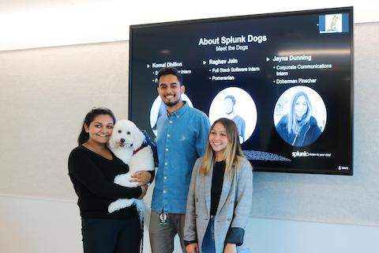
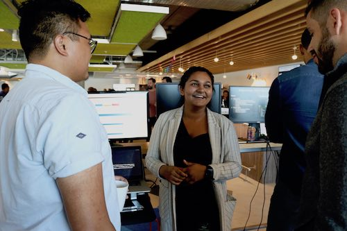

Welcome to my work experience page!
This page will walk you through all of my previous work experiences to allow you to see what type of work I have done that fits the position I have applied for.
Solutions Engineer Intern at Splunk Inc.
During my time at my internship I was able to use the Splunk platform and Splunk any data using python and Splunk coding language and see how I can use the data to help better society. My Team and I decided to Splunk the Opioid Epidemic in Philadelphia as that is the third worst state facing this issue. We were able to get data that allowed us to track information such as; age, race, gender, area of death, and even drug that was used the most. Using Splunk we were able to track hot spots in Philly which help mitigate the current drug use. Our presentation and work recieved second place out of every Splunk intern in the country.
Solutions Engineer Intern at Splunk Inc Part 2
As a Solutions Engineer intern I was able to learn the Splunk platform in depth, become Splunk User Certified, and do what everyday Solutions Engineers do. This internship allowed me to harness both my interpersonal skills and technical skills. As a solutions engineer you are put in action with the client helping them integrate data and use that to build out visualizations of their data to help them see into where they are seeing problems. During my internship I was able to work a lot with our IT operations demo, as well as use python and linux to update and work with web applications. At the end of my internship I was able to present my work at a showcase, where top executives and other full-timers were present.
Teachers Assistant at Michigan Ross School of Business

My experience as a teachers assistant is unique, while I did grade and take attendance. Due to my technical background I was asked to create an algorithm that takes the class data and helps find the diversity score. The class I TA for is a project and group work based class, you have to apply and you'll be placed on a team that you will work with for the rest of semester. Therefore as we are placing teams we want to make sure that the team is a diverse as possible. The term diverse here inlcudes grad students versus non grad students, major, under represented minorites, and lastly gender. My algorithm will allow us to see proposed diversity scores based on those limitations per student.